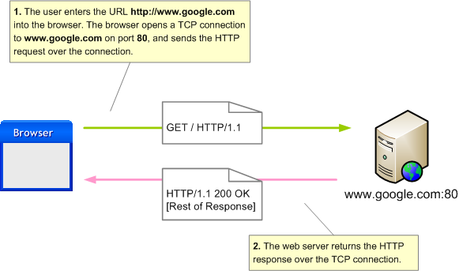

Learn to Code with
Week 4
Eoin Houlihan
Thank you!
Lots of really good code sent to me last week!
I didn't just copy this slide over from two weeks ago...
Solution To Last Week's Problem
We'll take a look at a solution to the date checker program from last week.
Just like last week it's available to download on the sample code page
Bit of a diversion this week
Web servers!
Ruby is used quite heavily for making web applications
Stuff like Twitter, SoundCloud, Airbnb
How a web(HTTP) request works
Browser asks the server for a file at a location
Server either finds or generates the data and sends back OK if it succeeded
Basically this
Setup time wooooo
Open a terminal on cloud9(alt + t) and type the following
gem install sinatra
To make sure it works we'll use the following code
require "sinatra"
set :port, ENV["PORT"]
set :bind, ENV["IP"]
get "/" do
"Hello world"
end
Sinatra
Sinatra is a Ruby library for writing web servers
Libraries are shared bits of code other people have written that we can reuse
Breaking it down
get "/" defines code to run when a browser looks for "/"
In this case we just send "Hello world" to the browser
These are like /Documents/Music/ file paths
Writing our quiz as multiple web pages
Sinatra lets us break down the URL we receive
We can use this to lookup our quiz index
require "sinatra"
set :port, ENV["PORT"]
set :bind, ENV["IP"]
QUIZ = [{ question: "Capital of Ireland?", answer: "Dublin" },
{ question: "Lbs in a stone?", answer: "14" }]
get "/question/:id" do
index = params[:id].to_i
if QUIZ[index]
QUIZ[index][:question]
else
status 404
"Not found"
end
end
Your task for next week
#TODO
Any questions, email me! ehoulih@tcd.ie
Final week next week!
Slides are available online -> https://houli.github.io/slides